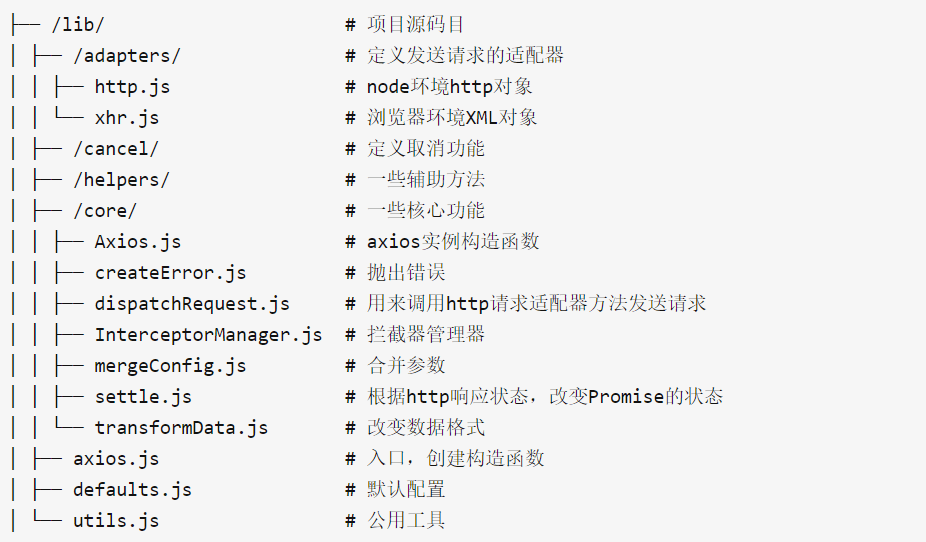
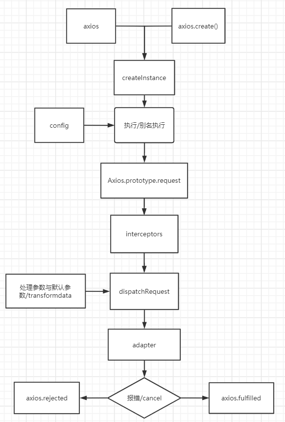

Axios的原理是什么？
参考答案
一、axios的使用
关于axios的基本使用，上篇文章已经有所涉及，这里再稍微回顾下：
发送请求
import axios from 'axios';
axios(config) // 直接传入配置
axios(url[, config]) // 传入url和配置
axios[method](url[, option]) // 直接调用请求方式方法，传入url和配置
axios[method](url[, data[, option]]) // 直接调用请求方式方法，传入data、url和配置
axios.request(option) // 调用 request 方法
const axiosInstance = axios.create(config)
// axiosInstance 也具有以上 axios 的能力
axios.all([axiosInstance1, axiosInstance2]).then(axios.spread(response1, response2))
// 调用 all 和传入 spread 回调
请求拦截器
axios.interceptors.request.use(function (config) {
// 这里写发送请求前处理的代码
return config;
}, function (error) {
// 这里写发送请求错误相关的代码
return Promise.reject(error);
});响应拦截器
axios.interceptors.response.use(function (response) {
// 这里写得到响应数据后处理的代码
return response;
}, function (error) {
// 这里写得到错误响应处理的代码
return Promise.reject(error);
});取消请求
// 方式一
const CancelToken = axios.CancelToken;
const source = CancelToken.source();
axios.get('xxxx', {
cancelToken: source.token
})
// 取消请求 (请求原因是可选的)
source.cancel('主动取消请求');
// 方式二
const CancelToken = axios.CancelToken;
let cancel;
axios.get('xxxx', {
cancelToken: new CancelToken(function executor(c) {
cancel = c;
})
});
cancel('主动取消请求');二、实现一个简易版axios
构建一个Axios构造函数，核心代码为request
class Axios {
constructor() {
}
request(config) {
return new Promise(resolve => {
const {url = '', method = 'get', data = {}} = config;
// 发送ajax请求
const xhr = new XMLHttpRequest();
xhr.open(method, url, true);
xhr.onload = function() {
console.log(xhr.responseText)
resolve(xhr.responseText);
}
xhr.send(data);
})
}
}导出axios实例
// 最终导出axios的方法，即实例的request方法
function CreateAxiosFn() {
let axios = new Axios();
let req = axios.request.bind(axios);
return req;
}
// 得到最后的全局变量axios
let axios = CreateAxiosFn();上述就已经能够实现axios({ })这种方式的请求
下面是来实现下axios.method()这种形式的请求
// 定义get,post...方法，挂在到Axios原型上
const methodsArr = ['get', 'delete', 'head', 'options', 'put', 'patch', 'post'];
methodsArr.forEach(met => {
Axios.prototype[met] = function() {
console.log('执行'+met+'方法');
// 处理单个方法
if (['get', 'delete', 'head', 'options'].includes(met)) { // 2个参数(url[, config])
return this.request({
method: met,
url: arguments[0],
...arguments[1] || {}
})
} else { // 3个参数(url[,data[,config]])
return this.request({
method: met,
url: arguments[0],
data: arguments[1] || {},
...arguments[2] || {}
})
}
}
})将Axios.prototype上的方法搬运到request上
首先实现个工具类，实现将b方法混入到a，并且修改this指向
const utils = {
extend(a,b, context) {
for(let key in b) {
if (b.hasOwnProperty(key)) {
if (typeof b[key] === 'function') {
a[key] = b[key].bind(context);
} else {
a[key] = b[key]
}
}
}
}
}修改导出的方法
function CreateAxiosFn() {
let axios = new Axios();
let req = axios.request.bind(axios);
// 增加代码
utils.extend(req, Axios.prototype, axios)
return req;
}构建拦截器的构造函数
class InterceptorsManage {
constructor() {
this.handlers = [];
}
use(fullfield, rejected) {
this.handlers.push({
fullfield,
rejected
})
}
}实现axios.interceptors.response.use和axios.interceptors.request.use
class Axios {
constructor() {
// 新增代码
this.interceptors = {
request: new InterceptorsManage,
response: new InterceptorsManage
}
}
request(config) {
...
}
}执行语句axios.interceptors.response.use和axios.interceptors.request.use的时候，实现获取axios实例上的interceptors对象，然后再获取response或request拦截器，再执行对应的拦截器的use方法
把Axios上的方法和属性搬到request过去
function CreateAxiosFn() {
let axios = new Axios();
let req = axios.request.bind(axios);
// 混入方法， 处理axios的request方法，使之拥有get,post...方法
utils.extend(req, Axios.prototype, axios)
// 新增代码
utils.extend(req, axios)
return req;
}现在request也有了interceptors对象，在发送请求的时候，会先获取request拦截器的handlers的方法来执行
首先将执行ajax的请求封装成一个方法
request(config) {
this.sendAjax(config)
}
sendAjax(config){
return new Promise(resolve => {
const {url = '', method = 'get', data = {}} = config;
// 发送ajax请求
console.log(config);
const xhr = new XMLHttpRequest();
xhr.open(method, url, true);
xhr.onload = function() {
console.log(xhr.responseText)
resolve(xhr.responseText);
};
xhr.send(data);
})
}获得handlers中的回调
request(config) {
// 拦截器和请求组装队列
let chain = [this.sendAjax.bind(this), undefined] // 成对出现的，失败回调暂时不处理
// 请求拦截
this.interceptors.request.handlers.forEach(interceptor => {
chain.unshift(interceptor.fullfield, interceptor.rejected)
})
// 响应拦截
this.interceptors.response.handlers.forEach(interceptor => {
chain.push(interceptor.fullfield, interceptor.rejected)
})
// 执行队列，每次执行一对，并给promise赋最新的值
let promise = Promise.resolve(config);
while(chain.length > 0) {
promise = promise.then(chain.shift(), chain.shift())
}
return promise;
}chains大概是['fulfilled1','reject1','fulfilled2','reject2','this.sendAjax','undefined','fulfilled2','reject2','fulfilled1','reject1']这种形式
这样就能够成功实现一个简易版axios
三、源码分析
首先看看目录结构

axios发送请求有很多实现的方法，实现入口文件为axios.js
function createInstance(defaultConfig) {
var context = new Axios(defaultConfig);
// instance指向了request方法，且上下文指向context，所以可以直接以 instance(option) 方式调用
// Axios.prototype.request 内对第一个参数的数据类型判断，使我们能够以 instance(url, option) 方式调用
var instance = bind(Axios.prototype.request, context);
// 把Axios.prototype上的方法扩展到instance对象上，
// 并指定上下文为context，这样执行Axios原型链上的方法时，this会指向context
utils.extend(instance, Axios.prototype, context);
// Copy context to instance
// 把context对象上的自身属性和方法扩展到instance上
// 注：因为extend内部使用的forEach方法对对象做for in 遍历时，只遍历对象本身的属性，而不会遍历原型链上的属性
// 这样，instance 就有了 defaults、interceptors 属性。
utils.extend(instance, context);
return instance;
}
// Create the default instance to be exported 创建一个由默认配置生成的axios实例
var axios = createInstance(defaults);
// Factory for creating new instances 扩展axios.create工厂函数，内部也是 createInstance
axios.create = function create(instanceConfig) {
return createInstance(mergeConfig(axios.defaults, instanceConfig));
};
// Expose all/spread
axios.all = function all(promises) {
return Promise.all(promises);
};
axios.spread = function spread(callback) {
return function wrap(arr) {
return callback.apply(null, arr);
};
};
module.exports = axios;主要核心是 Axios.prototype.request，各种请求方式的调用实现都是在 request 内部实现的， 简单看下 request 的逻辑
Axios.prototype.request = function request(config) {
// Allow for axios('example/url'[, config]) a la fetch API
// 判断 config 参数是否是 字符串，如果是则认为第一个参数是 URL，第二个参数是真正的config
if (typeof config === 'string') {
config = arguments[1] || {};
// 把 url 放置到 config 对象中，便于之后的 mergeConfig
config.url = arguments[0];
} else {
// 如果 config 参数是否是 字符串，则整体都当做config
config = config || {};
}
// 合并默认配置和传入的配置
config = mergeConfig(this.defaults, config);
// 设置请求方法
config.method = config.method ? config.method.toLowerCase() : 'get';
/*
something... 此部分会在后续拦截器单独讲述
*/
};
// 在 Axios 原型上挂载 'delete', 'get', 'head', 'options' 且不传参的请求方法，实现内部也是 request
utils.forEach(['delete', 'get', 'head', 'options'], function forEachMethodNoData(method) {
Axios.prototype[method] = function(url, config) {
return this.request(utils.merge(config || {}, {
method: method,
url: url
}));
};
});
// 在 Axios 原型上挂载 'post', 'put', 'patch' 且传参的请求方法，实现内部同样也是 request
utils.forEach(['post', 'put', 'patch'], function forEachMethodWithData(method) {
Axios.prototype[method] = function(url, data, config) {
return this.request(utils.merge(config || {}, {
method: method,
url: url,
data: data
}));
};
});request入口参数为config，可以说config贯彻了axios的一生
axios 中的 config 主要分布在这几个地方：
- 默认配置
defaults.js config.method默认为get- 调用
createInstance方法创建axios实例，传入的config - 直接或间接调用
request方法，传入的config
// axios.js
// 创建一个由默认配置生成的axios实例
var axios = createInstance(defaults);
// 扩展axios.create工厂函数，内部也是 createInstance
axios.create = function create(instanceConfig) {
return createInstance(mergeConfig(axios.defaults, instanceConfig));
};
// Axios.js
// 合并默认配置和传入的配置
config = mergeConfig(this.defaults, config);
// 设置请求方法
config.method = config.method ? config.method.toLowerCase() : 'get';
从源码中，可以看到优先级：默认配置对象default < method:get < Axios的实例属性this.default < request参数
下面重点看看request方法
Axios.prototype.request = function request(config) {
/*
先是 mergeConfig ... 等，不再阐述
*/
// Hook up interceptors middleware 创建拦截器链. dispatchRequest 是重中之重，后续重点
var chain = [dispatchRequest, undefined];
// push各个拦截器方法 注意：interceptor.fulfilled 或 interceptor.rejected 是可能为undefined
this.interceptors.request.forEach(function unshiftRequestInterceptors(interceptor) {
// 请求拦截器逆序 注意此处的 forEach 是自定义的拦截器的forEach方法
chain.unshift(interceptor.fulfilled, interceptor.rejected);
});
this.interceptors.response.forEach(function pushResponseInterceptors(interceptor) {
// 响应拦截器顺序 注意此处的 forEach 是自定义的拦截器的forEach方法
chain.push(interceptor.fulfilled, interceptor.rejected);
});
// 初始化一个promise对象，状态为resolved，接收到的参数为已经处理合并过的config对象
var promise = Promise.resolve(config);
// 循环拦截器的链
while (chain.length) {
promise = promise.then(chain.shift(), chain.shift()); // 每一次向外弹出拦截器
}
// 返回 promise
return promise;
};拦截器interceptors是在构建axios实例化的属性
function Axios(instanceConfig) {
this.defaults = instanceConfig;
this.interceptors = {
request: new InterceptorManager(), // 请求拦截
response: new InterceptorManager() // 响应拦截
};
}InterceptorManager构造函数
// 拦截器的初始化 其实就是一组钩子函数
function InterceptorManager() {
this.handlers = [];
}
// 调用拦截器实例的use时就是往钩子函数中push方法
InterceptorManager.prototype.use = function use(fulfilled, rejected) {
this.handlers.push({
fulfilled: fulfilled,
rejected: rejected
});
return this.handlers.length - 1;
};
// 拦截器是可以取消的，根据use的时候返回的ID，把某一个拦截器方法置为null
// 不能用 splice 或者 slice 的原因是 删除之后 id 就会变化，导致之后的顺序或者是操作不可控
InterceptorManager.prototype.eject = function eject(id) {
if (this.handlers[id]) {
this.handlers[id] = null;
}
};
// 这就是在 Axios的request方法中 中循环拦截器的方法 forEach 循环执行钩子函数
InterceptorManager.prototype.forEach = function forEach(fn) {
utils.forEach(this.handlers, function forEachHandler(h) {
if (h !== null) {
fn(h);
}
});
}请求拦截器方法是被 unshift到拦截器中，响应拦截器是被push到拦截器中的。最终它们会拼接上一个叫dispatchRequest的方法被后续的 promise 顺序执行
var utils = require('./../utils');
var transformData = require('./transformData');
var isCancel = require('../cancel/isCancel');
var defaults = require('../defaults');
var isAbsoluteURL = require('./../helpers/isAbsoluteURL');
var combineURLs = require('./../helpers/combineURLs');
// 判断请求是否已被取消，如果已经被取消，抛出已取消
function throwIfCancellationRequested(config) {
if (config.cancelToken) {
config.cancelToken.throwIfRequested();
}
}
module.exports = function dispatchRequest(config) {
throwIfCancellationRequested(config);
// 如果包含baseUrl, 并且不是config.url绝对路径，组合baseUrl以及config.url
if (config.baseURL && !isAbsoluteURL(config.url)) {
// 组合baseURL与url形成完整的请求路径
config.url = combineURLs(config.baseURL, config.url);
}
config.headers = config.headers || {};
// 使用/lib/defaults.js中的transformRequest方法，对config.headers和config.data进行格式化
// 比如将headers中的Accept，Content-Type统一处理成大写
// 比如如果请求正文是一个Object会格式化为JSON字符串，并添加application/json;charset=utf-8的Content-Type
// 等一系列操作
config.data = transformData(
config.data,
config.headers,
config.transformRequest
);
// 合并不同配置的headers，config.headers的配置优先级更高
config.headers = utils.merge(
config.headers.common || {},
config.headers[config.method] || {},
config.headers || {}
);
// 删除headers中的method属性
utils.forEach(
['delete', 'get', 'head', 'post', 'put', 'patch', 'common'],
function cleanHeaderConfig(method) {
delete config.headers[method];
}
);
// 如果config配置了adapter，使用config中配置adapter的替代默认的请求方法
var adapter = config.adapter || defaults.adapter;
// 使用adapter方法发起请求（adapter根据浏览器环境或者Node环境会有不同）
return adapter(config).then(
// 请求正确返回的回调
function onAdapterResolution(response) {
// 判断是否以及取消了请求，如果取消了请求抛出以取消
throwIfCancellationRequested(config);
// 使用/lib/defaults.js中的transformResponse方法，对服务器返回的数据进行格式化
// 例如，使用JSON.parse对响应正文进行解析
response.data = transformData(
response.data,
response.headers,
config.transformResponse
);
return response;
},
// 请求失败的回调
function onAdapterRejection(reason) {
if (!isCancel(reason)) {
throwIfCancellationRequested(config);
if (reason && reason.response) {
reason.response.data = transformData(
reason.response.data,
reason.response.headers,
config.transformResponse
);
}
}
return Promise.reject(reason);
}
);
};再来看看axios是如何实现取消请求的，实现文件在CancelToken.js
function CancelToken(executor) {
if (typeof executor !== 'function') {
throw new TypeError('executor must be a function.');
}
// 在 CancelToken 上定义一个 pending 状态的 promise ，将 resolve 回调赋值给外部变量 resolvePromise
var resolvePromise;
this.promise = new Promise(function promiseExecutor(resolve) {
resolvePromise = resolve;
});
var token = this;
// 立即执行 传入的 executor函数，将真实的 cancel 方法通过参数传递出去。
// 一旦调用就执行 resolvePromise 即前面的 promise 的 resolve，就更改promise的状态为 resolve。
// 那么xhr中定义的 CancelToken.promise.then方法就会执行, 从而xhr内部会取消请求
executor(function cancel(message) {
// 判断请求是否已经取消过，避免多次执行
if (token.reason) {
return;
}
token.reason = new Cancel(message);
resolvePromise(token.reason);
});
}
CancelToken.source = function source() {
// source 方法就是返回了一个 CancelToken 实例，与直接使用 new CancelToken 是一样的操作
var cancel;
var token = new CancelToken(function executor(c) {
cancel = c;
});
// 返回创建的 CancelToken 实例以及取消方法
return {
token: token,
cancel: cancel
};
};实际上取消请求的操作是在 xhr.js 中也有响应的配合的
if (config.cancelToken) {
config.cancelToken.promise.then(function onCanceled(cancel) {
if (!request) {
return;
}
// 取消请求
request.abort();
reject(cancel);
});
}巧妙的地方在 CancelToken中 executor 函数，通过resolve函数的传递与执行，控制promise的状态
小结

参考文献
- https://juejin.cn/post/6856706569263677447#heading-4
- https://juejin.cn/post/6844903907500490766
- https://github.com/axios/axios
Axios 是一个基于 Promise 的 HTTP 客户端，用于浏览器和 node.js。它的原理可以概括为以下几个关键点：
- 基于 Promise：Axios 使用了 JavaScript 的 Promise 对象来处理异步请求，这意味着你可以使用链式调用和处理多个请求。
- 拦截器：Axios 提供了拦截器（interceptors）机制，允许你在请求或响应被处理之前进行自定义处理。这使得可以统一处理如添加认证、修改请求头、处理错误等操作。
- 请求/响应转换：Axios 允许你在发送请求之前或接收到响应之后对数据进行转换，这可以通过
transformRequest和transformResponse函数来实现。 - 取消请求：Axios 支持取消请求，这可以通过
CancelToken对象实现。这个对象允许你在请求执行过程中取消它，从而释放服务器资源。 - 配置默认值：Axios 允许你为请求设置默认配置，这些配置可以在每个请求中覆盖。
- 请求和响应处理：Axios 提供了请求和响应处理的方法，如
dispatchRequest和transformData，这些方法负责处理实际的网络请求和响应数据。 - 错误处理：Axios 提供了详细的错误处理机制，可以在请求失败时捕获错误并采取相应的操作。
- 并发处理：Axios 支持并发处理多个请求，通过
all方法可以同时发送多个请求，并通过spread方法处理它们的响应。 - 适配器模式：Axios 使用适配器模式来处理不同环境下的 HTTP 请求，例如在浏览器中使用 XMLHttpRequest，在 node.js 中使用 http 模块。
- 依赖模块：Axios 依赖了多个模块，如
es6-promise（在 node.js 中是promise）、qs（用于序列化查询字符串）、lodash（用于处理数组和对象）等。
Axios 的设计目的是为了简化网络请求的处理，并提供强大的功能来处理异步请求和响应。通过其丰富的 API 和灵活的配置选项，Axios 已经成为前端开发中处理 HTTP 请求的流行选择。